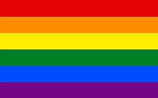

דגלון

לדגלון הזה יש משמעות ענקית עבורי, אז שעוד הייתי ילד בן 14 שלמד בפנימייה וסולק בגלל שהמלמד גילה שאני הומו, נשברתי לרסיסים לא ידעתי איך לעכל את זה שמסלקים אותי ממסגרת שהשקעתי ככ הרבה כדי להתקדם וללמוד בה, הייתי בטוח שאני פגום ושאני היחיד בעולם עם ה'בעיה' הזו, הייתי ככ מפוחד ומלא בושה.
ואז לאט לאט התחלתי לגלות את העולם הצבעוני והגדול ולהבין שאין אצלי שום דבר חריג, ובמי שנמצאת הבעיה היא באותו מלמד שהחליט לוותר עליי בגלל דעות חשוכות.
בגיל 21 לראשונה הייתי במצעד גאווה והיה ככ כיף לראות אנשים שמחים וגאים במי שהם, לא עוד אותו ילד קטן ומפוחד שלא יודע איך להתמודד מול העולם הגדול וה
*צבעוני*.
אני יהודי, הומו, חוזר בתשובה ומחוץ לארון והיום אני מסוגל להסתכל לעצמי בעיניים במראה ולהיות שמח וגאה על התהליך שעברתי, לקבל את עצמי ולקבל את ה' ולהבין שהכל נעשה לטובתנו